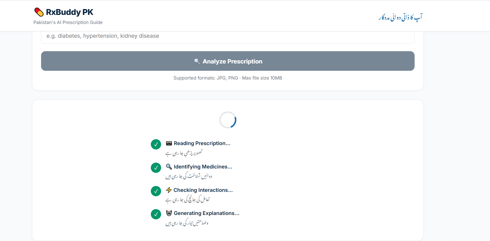

RxBuddy PK
A bilingual Urdu/English AI prescription-scanning app for Pakistani patients — built solo, end to end, on a free-tier stack.

The problem
Prescriptions in Pakistan are usually handwritten or printed in a mix of Urdu and English, and most patients have no easy way to check what a drug does, whether it interacts with something else they're taking, or whether the dose makes sense. Existing prescription apps are built for English-only, US/UK-style workflows and don't handle this.
What I did, and what I decided
I built RxBuddy PK from scratch — no funding, no team. I ran OCR through Tesseract rather than a paid vision API, since the app needed to stay free to operate. I built fuzzy drug-name extraction to handle the messy spelling that comes out of OCR on real prescriptions, and I wrote the drug-interaction and disease-warning logic myself rather than trusting an LLM to generate it — a wrong interaction rule can genuinely harm someone, so that layer needed to be something I could personally verify against DRAP/BNF, not something I delegated. I'm currently rebuilding the retrieval layer with RAG/FAISS so drug lookups scale past a hardcoded dictionary.
What came of it
A working bilingual Urdu/English prescription scanner that goes from a photographed prescription to a structured, safety-checked medicine card — OCR, extraction, interaction checking, and card generation all running end-to-end on infrastructure that costs nothing to operate. Still in progress: the RAG rebuild and moving off the hardcoded drug dictionary.
Talk to me about this